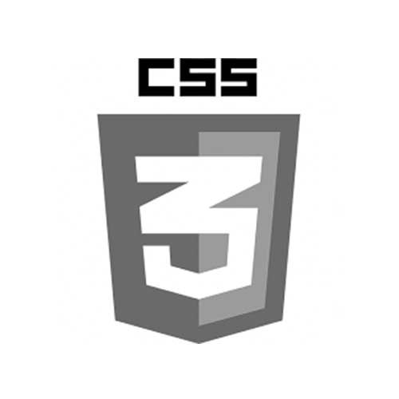

Newspaper Title
WHAI IS CSS？
All the documentation in this page is taken from MDN
 CSS is a language for specifying how documents are presented to users — how they are styled, laid out, etc A document is usually a text file structured using a markup language — HTML is the most common markup language, but you may also come across other markup languages such as SVG or XML. Presenting a document to a user means converting it into a form usable by your audience. Browsers, like Firefox, Chrome, or Edge , are designed to present documents visually, for example, on a computer screen, projector or printer.
CSS can be used for very basic document text styling — for example changing the color and size of headings and links. It can be used to create layout — for example turning a single column of text into a layout with a main content area and a sidebar for related information. It can even be used for effects such as animation
The Box Model
.png) Everything in CSS has a box around it, and understanding these boxes is key to being able to create layouts with CSS, or to align items with other items. In this lesson, we will take a proper look at the CSS Box Model so that you can build more complex layout tasks with an understanding of how it works and the terminology that relates to it.
Everything in CSS has a box around it, and understanding these boxes is key to being able to create layouts with CSS, or to align items with other items. In this lesson, we will take a proper look at the CSS Box Model so that you can build more complex layout tasks with an understanding of how it works and the terminology that relates to it.
- The box will break onto a new line.
- The box will extend in the inline direction to fill the space available in its container. In most cases this means that the box will become as wide as its container, filling up 100% of the space available.
- The width and height properties are respected.
- Padding, margin and border will cause other elements to be pushed away from the box
CSS Border Properties
The border-radius CSS property rounds the corners of an element's outer border edge. You can set a single radius to make circular corners, or two radii to make elliptical corners.
Border Radius Examples
We can use the border-radius attribute to make the following shapes
Box-shadow demo
Neumorphismis also a popular CSS style. Its main principle is to use the boxshadow attribute